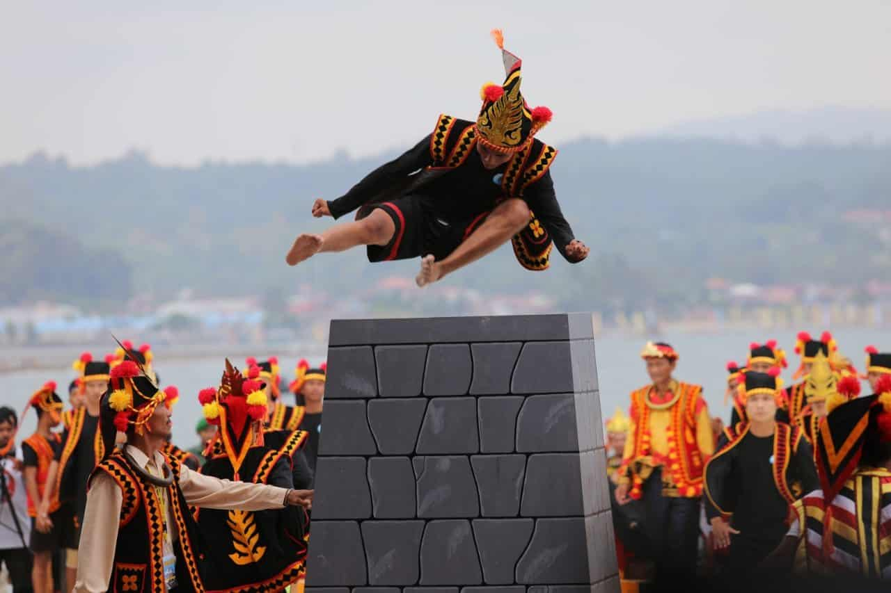
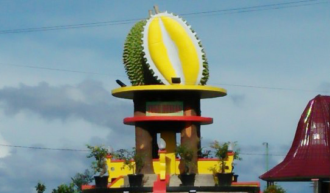
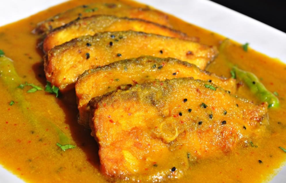

Tentang

Nias merupakan salah satu kabupaten di Sumatera Utara yang menjadi pulau terbesar di antara gugusan
pulau di pantai barat Sumatera. Mayoritas penduduk kabupaten dengan luas wilayah 5.625 kilometer
persegi ini adalah suku Nias atau yang biasa disebut Oho Niha.
Penduduk di Pulau Nias terkenal dengan budaya berperangnya. Meskipun saat ini telah berada di era
modern, suku Nias tetap mempertahankan adatnya dan mereka masih terus menjalankan kehidupannya
seperti yang dilakukan nenek moyang.
Wisata
Berbagai destinasi tempat wisata di Nias terkenal sebagai surga tersembunyi di Sumatera Utara.
Tak cuma keindahan panorama alam, kebudayaan dan juga tradisi yang ada di Nias juga menjadi
keunikan tersendiri.
Pantai Sorake

Pantai Sorake merupakan surganya bagi pecinta surfing (bermain selancar) Pantai Sorake ini
terletak di Nias bagian selatan. Pantai ini juga masuk dalam 10 besar tempat surfing terbaik di
dunia bahkan disebut-sebut nomor 2 di dunia setelah Hawai. Di bulan juni-juli pantai sorake
sangat ramai dikunjungi turis asing untuk berselancar karena ketinggina ombaknya bisa mencapai
10 m – 12 m.
Desa Bawömataluo

Bawömataluo adalah salah satu desa di kecamatan Fanayama, Kabupaten Nias Selatan, provinsi
Sumatra Utara, Indonesia. Sebelumnya menjadi wilayah kecamatan Teluk Dalam dan menjadi wilayah
Kec. Fanayama berdasarkan Perda No. 12/2008. Desa ini terdiri dari 9 dusun dan berada pada
ketinggian di atas 324 m dari permukaan laut. Sebelumnya desa ini masuk Kecamatan Telukdalam.
Namun, setelah Kecamatan Telukdalam mengalami pemekaran wilayah, beberapa desanya masuk ke dalam
hasil pemekaran kecamatan Teluk Dalam, yakni kecamatan Fanayama.
Desa Bawömataluo terkenal sebagai desa budaya dan budaya yang terkenal di desa ini adalah
tradisi "Lompat Batu". Desa ini diusulkan menjadi kawasan warisan budaya dunia dalam Situs
Warisan Dunia UNESCO pada tahun 2009.
Pantai Tureloto

Di Indonesia, ternyata ada daerah yang karakteristiknya mirip dengan Laut Mati. Tepatnya di
Pantai Tureloto, Desa Balefadorotuho, Kecamatan Lahewa, Kabupaten Nias Utara, Sumatera Utara.
Pantai ini mempunyai pemandangan yang indah dan air di pantai ini juga mengandung kadar garam
yang lumayan tinggi. Sehingga para pengunjung pun bisa mengapung tanpa harus berenang.
Kuliner
Selain wisata yang eksotis nias juga memiliki beragam kuliner yang khas. Beberapa Kuliner yang
dapat di
nikmati sebagai berikut.
Durian

Untuk kuliner durian maka berkunjung ke Kota Gunungsitoli menjadi pusat penjualan durian-durian
berkualitas dari seluruh penjuru pulau Nias. Makan durian adalah pengalaman yang tidak boleh
terlewatkan selama kunjungan ke Kota Gunungsitoli.
Köfö-köfö

Nias dengan hasil laut yang melimpah membuat masyarakatnya menciptakan hidangan-hidangan dengan
bahan dasar ikan laut, salah satunya adalah köfö-köfö. Hidangan ini pada dasarnya mempunyai cita
rasa yang tak jauh beda dari gulai ikan, namun proses pembuatan hidangan ini yang menjadi
pembeda. Ikan yang ada pada hidangan ini kulitnya sudah dibuang terlebih dahulu, setelah itu
ikan digoreng dan dimasak bersamaan dengan santan kelapa, bumbu, dan rempah lainnya.
Lehedalö Nifange

Hidangan yang satu ini cukup terkenal di kalangan masyarakat Nias, lho. Hidangan ini berbahan
dasar talas. Eits, tapi jangan takut rasanya tidak enak, ya. Karena talas di dalam hidangan ini
bercampur dengan bumbu rendang. Jadi, lehedalö nifange ini adalah talas yang direndang. Karena
rasanya yang enak, hidangan ini sering menjadi lauk yang disantap bersama nasi atau sagu oleh
masyarakat Nias.